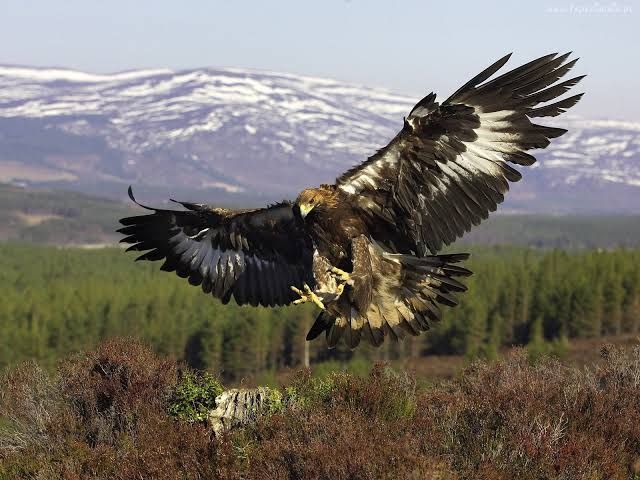

Wild Animals of Kazakhstan
Kazakhstan is home to many different species of animals. They live in mountains, steppes, deserts and forests.

Featured Animals of Kazakhstan
Real wildlife species recorded in Kazakhstan, powered by iNaturalist.
Loading animals...
Interesting Facts
- Kazakhstan has a very large territory.
- Different animals live in different habitats.
- The snow leopard lives in mountainous areas.
- Saiga antelopes are adapted to life in the steppe.
- Birds of prey are an important part of ecosystems.
Frequently Asked Questions
Click a question to read the answer. Click it again to close it.
Wild Animals Information
| Animal | Habitat | Diet | Status |
|---|---|---|---|
| Snow Leopard | Mountains | Carnivore | Endangered |
| Saiga | Steppe | Herbivore | Protected |
| Wolf | Steppe and forests | Carnivore | Common |
| Golden Eagle | Mountains and steppe | Carnivore | Protected |